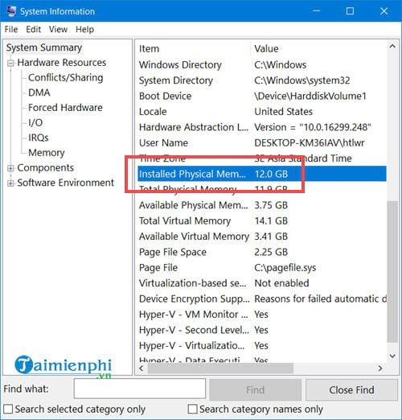

Giai phong RAM de may chay nhanh
Máy vi tính thời nay cần nhiều RAM để hoạt động hiệu quả,đặc biệt là nếu nó đang chạy Widows Vista 32-bit
Một hệ thống với 2GB bộ nhớ RAM vẫn có thể chạy ì ạch nếu nó được cấu hình không tốt và bạn phải nâng cấp lên 4GB RAM để rồi phát hiện ra PC của mình chỉ có thể truy cập khoảng 3GB. Vậy dung lượng RAM đã đi đâu, và có cách nào giúp bạn có thể lấy lại không? Cài đặt Windows Vista 64-bit có thể tạo nên sự khác biệt thực sự nếu như phần cứng của bạn đủ đáp ứng. Nhưng nếu điều đó quá tầm với bạn thì vẫn còn có các cách khác để khắc phục.Sau đây là những điều bạn cần biết.

- Kiểm soát những chương trình lúc khởi động:
- Vô hiệu hóa những dịch vụ không mong muốn:
- Giảm bớt yêu cầu phần cứng:
Con đường dẫn tới việc làm chủ bộ nhớ máy tính bắt đầu bằng việc nắm quyền kiểm soát nhiều hơn đối với những chương trình bạn đang chạy. Vào Start > All Programs và gỡ bỏ bất kỳ phần mềm nào bạn không sử dụng, sau đó khởi chạy MSCONFIG.EXE và nhấp vào thẻ Startup để xem những gì được cấu hình khởi động cùng Windows. Nếu bạn thấy những chương trình không cần thiết, bạn có thể gỡ bỏ hoặc thay đổi các thiết lập của nó để chương trình ấy không tự khởi động khi bạn đăng nhập vào Windows. Ứng dụng Add-ons cho các trình duyệt, Microsoft Office và những thứ tương tự cũng có thể tiêu thụ lượng RAM lớn đến không ngờ. Kiểm tra các add-ons trên trình duyệt hiện tại của bạn (vào Tools > Manage Add-ons trong IE, Tools > Add-ons trong Firefox) và vô hiệu hóa (hoặc gỡ bỏ cài đặt) bất kỳ cái nào mà bạn không sử dụng đến.
Để tăng tốc cho Windows một số người khuyên bạn nên vô hiệu hoá dịch vụ Windows không cần thiết. Nhưng trong hầu hết các trường hợp thì cách này không hiệu quả lắm, ngoại trừ Windows Defender, nó chiếm khoảng 20MB (hoặc nhiều hơn nếu bạn để nó chạy nền). Nếu bạn đã có một công cụ Antispyware hoặc Antivirus khác thì nên tắt Defender (trong Vista, chạy Windows Defender, nhấp chuột vào Tools > Options, cuộn xuống và bỏ chọn ‘Use Windows Defender’) Nếu bạn quyết định thử vô hiệu hoá các dịch vụ khác, bấm vào Start khởi chạy services.msc, di chuyển xuống trong danh sách để xem những gì có sẵn. Trên máy tính thử nghiệm cài đặt Windows Vista Ultimate, chúng tôi có thể vô hiệu hoá một cách an toàn những dịch vụ sau bằng cách click đúp chuột vào và thiết lập Startup type thành Disabled.Apple Mobile Device: đi kèm iTunes, không cần thiết nếu như bạn không có một thiết bị của Apple để kết nối. Distributed Link Tracking Client: duy trì các liên kết giữa các tập tin trên một mạng lưới tên miền, không phải là một tính năng mà chúng tôi sử dụng. Nero BackItUp Scheduler 3: cung cấp với Nero Burning ROM, nhưng không cần thiết nếu bạn không sử dụng các công cụ back-up. Offline Files: hữu ích nếu bạn đồng bộ hóa các tập tin giữa các máy tính, nhưng chúng tôi không cần. Tablet PC Input Service: Đây không phải là một Tablet PC (máy tính bảng). Quá trình này có lẽ giúp phục hồi 10MB bộ nhớ RAM. Bạn có thể đạt được nhiều hơn nếu bạn lược bỏ thêm nhiều dịch vụ, nhưng bạn cũng gặp những sự cố nguy hiểm nếu bạn loại bỏ những thứ gì đó mà bạn thực sự cần.
Nếu PC của bạn có 4GB bộ nhớ thì rất có thể bạn sẽ thấy rằng chỉ có thể truy cập từ 3 đến 3.5GB RAM, bởi vì BIOS của bạn đã cấp phần địa chỉ trống còn lại cho card màn hình, card mạng, và những phần cứng khác. Để xem những gì được cấp cho phần cứng trên PC của bạn, khởi chạy Device Manager (bấm vào Start và nhập devmgmt.msc), bấm View > Resources by type và mở rộng bộ nhớ. Phần tài nguyên thực sự bị cắt mất hầu như chắc chắn là do card màn hình của bạn. Nếu bạn có một chiếc card đồ họa 512MB, thì có thể nói rằng nó sẽ chiếm lấy 512MB (và nhiều hơn nữa, trên thực tế) ô nhớ của bạn. Điều này có lẽ sẽ không phải là vấn đề nếu bạn có 2GB RAM mà ở đó không có phần bộ nhớ nào bị khóa, nhưng nếu bạn có 4GB thì nó sẽ ngăn cản bạn sử dụng tối đa bộ nhớ. Bạn không thể giải quyết vấn đề này một cách hoàn toàn, nhưng cũng có những cách để giảm tác động của nó. Ví dụ, nếu bạn có cài đặt một card mở rộng mà bạn không còn cần nữa, hãy tháo gỡ nó. Nếu bạn không tận dụng hết card màn hình thì hãy xem xét hạ nó xuống với một mức RAM tối thiểu (128MB là đủ để chạy Vista). Kiểm tra BIOS để tắt các tính năng mà bạn không cần. Có một trình đơn thường được gọi là ‘Onboard Device Configuration’ hoặc ‘Integrated Periphrals’, nơi bạn có thể vô hiệu hoá card đồ họa on-board, card âm thanh tích hợp, network adapters hay kênh IDE chưa sử dụng…v.v.. Dùng cách này để tắt các phần cứng dư thừa, BIOS sẽ không phân bổ bộ nhớ cho chúng và phần dung lượng ấy sẽ dành cho bạn.